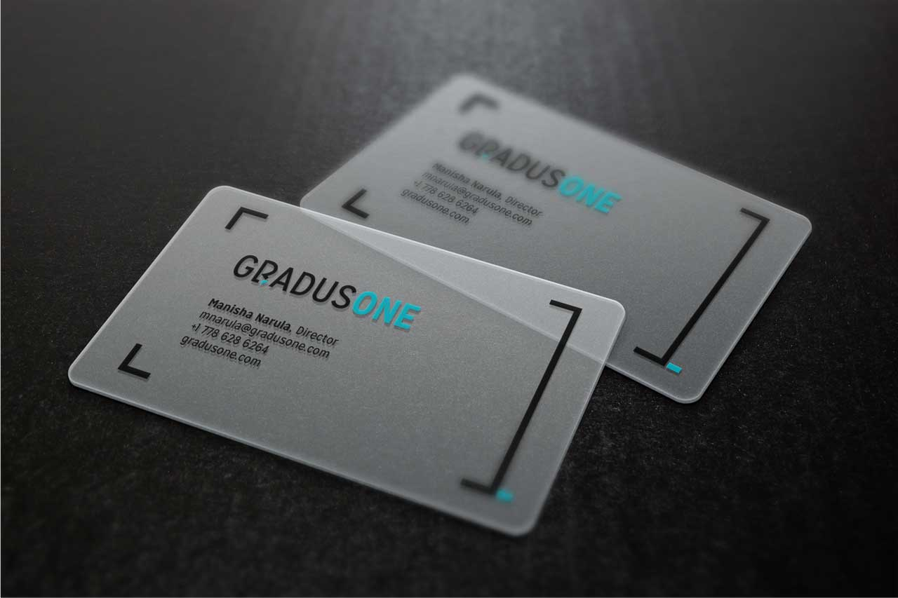

POSTER COMPILATION
THIRSTY FOR MORE? (2015 PERSONAL CARDS)
Business card rations were running low, so I updated my set of cards to match the colours of my portfolio, and included new "menu items". The consistent reaction from people I gave my previous card to were always positive, so I kept the same concept.

NEW AVENUE CAPITAL
A card for my client who an investment firm. I played with the contact portion to have it look like a legal document. The final card was printed with a silk matte laminate finish on 16pt cardstock.
KEYSTEP RECRUITMENT

Played around with layout and type for a more corporate look. The final card was printed with a silk matte laminate finish with spot UV treatment on the logo.
GRADUSONE
To match the brand message, I initially thought of designing for frosted plastic cards (see below), but because we could only print on one side it was rather limiting for my client. The final result was printed on 16pt cardstock with a silk matte laminate finish and spot UV treatment.
LET'S HAVE A DRINK SOMETIME? (2013 PERSONAL CARDS)
I took Ellen Lupton's Skillshare course and her project was to design the typographic composition for a business card. Although I typically work with sans-serif, I wanted to get out of my comfort zone and experiment with slab and handwritten typefaces.
Besides using various typefaces, I also used bright colour palettes and vibrant patterns to reflect my bubbly personality. Moo.com's printfinity made multiple designs possible.